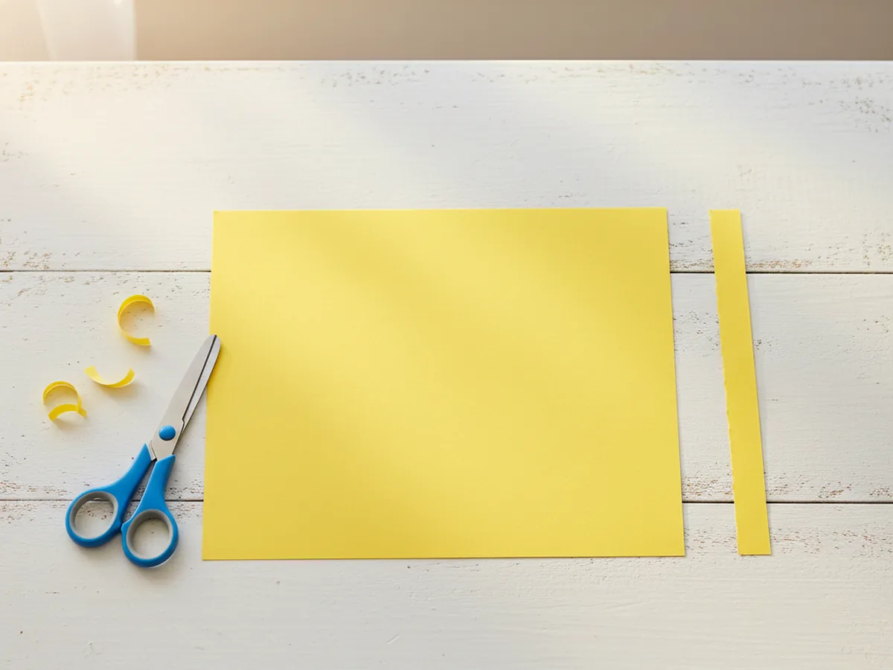
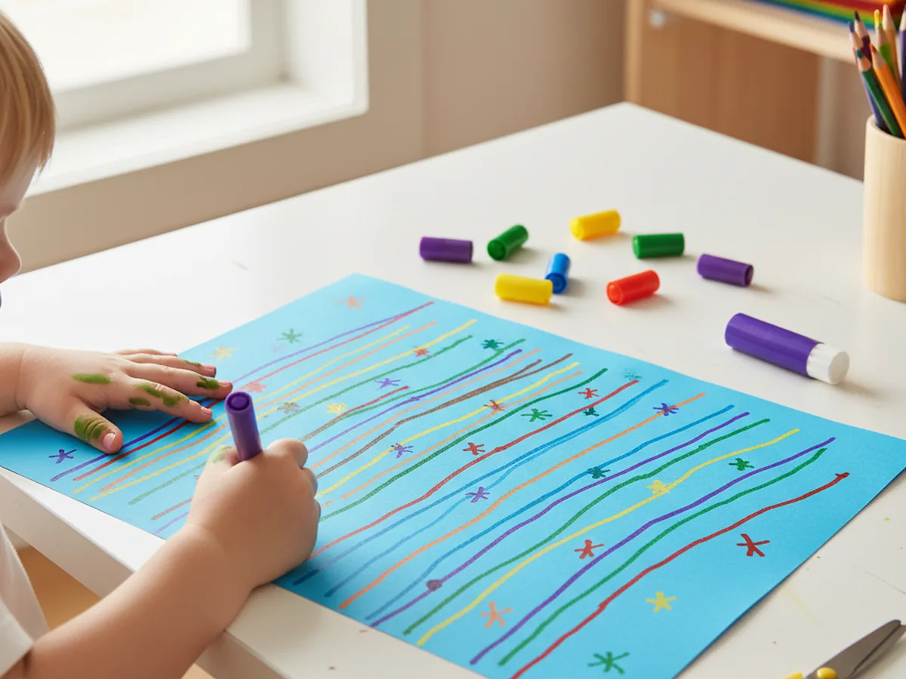
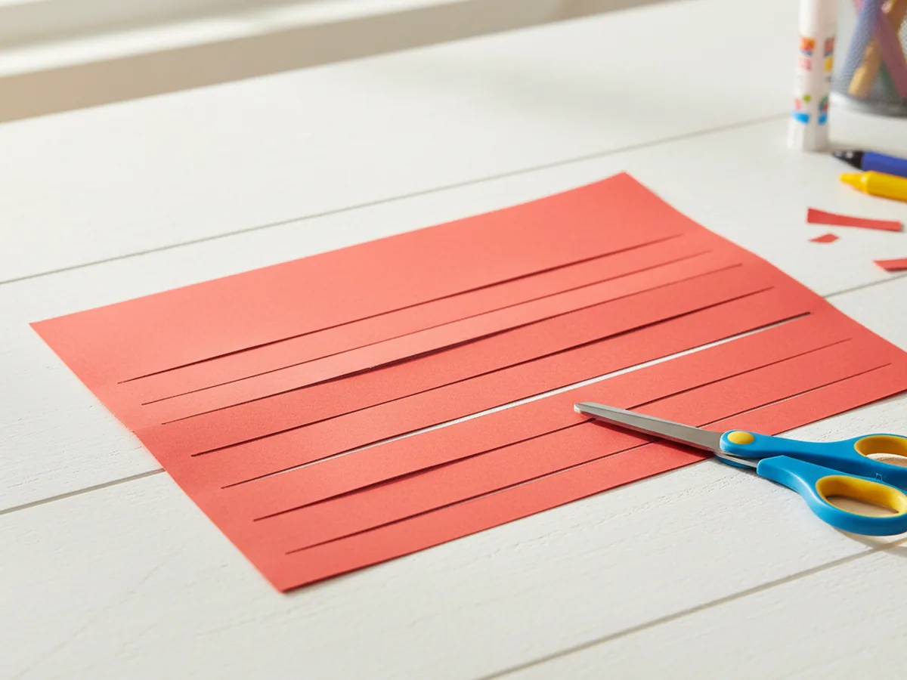
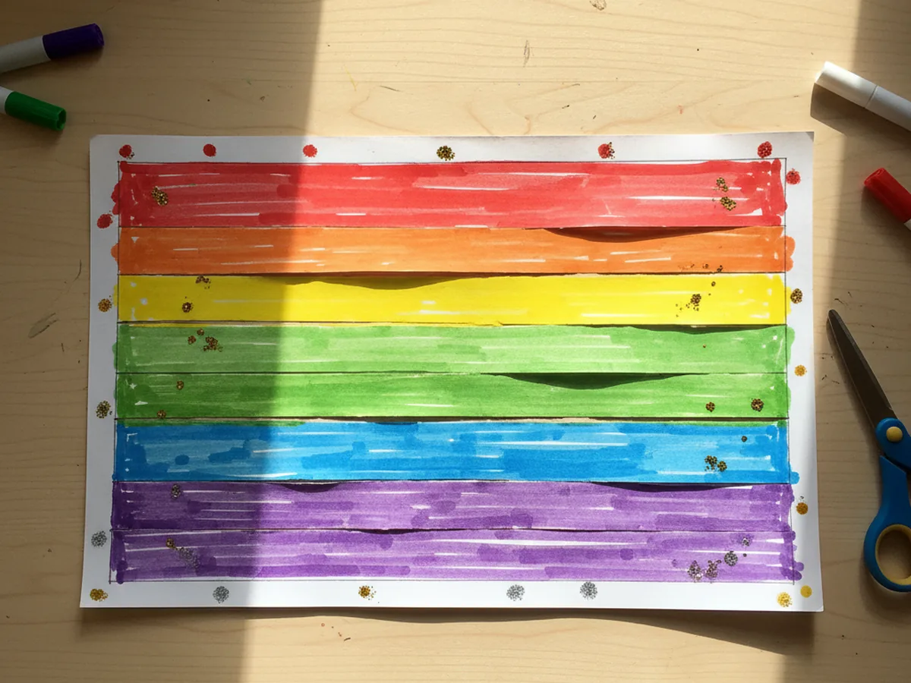
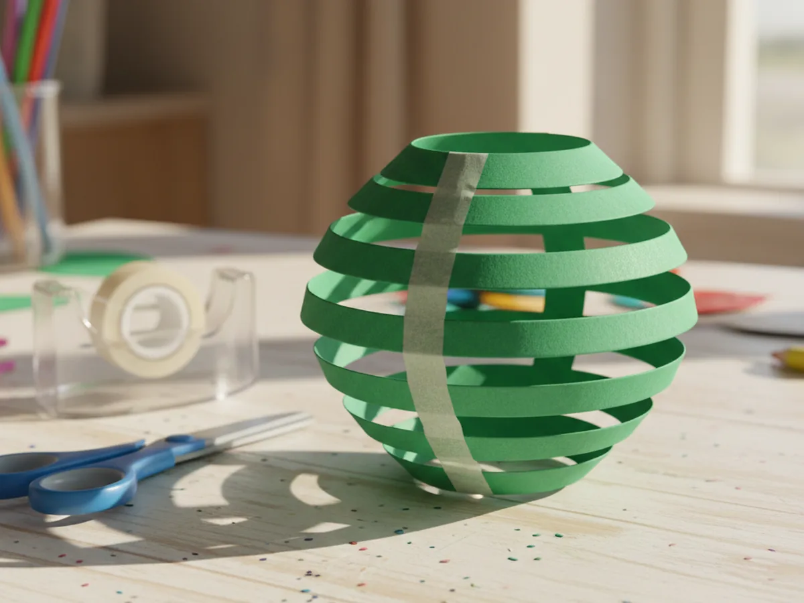
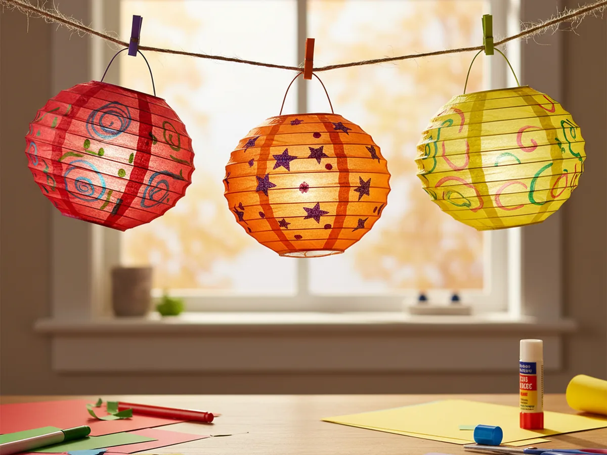

There is something genuinely magical about watching your child hold up a lantern they made with their own hands. This paper lantern craft is one of those perfect rainy afternoon projects: it takes about 20 minutes, uses supplies you already have at home, and ends with something your little one will want to carry around all afternoon. All you need is a sheet of construction paper, scissors, and a little tape. That is it!
Whether you are looking for a quick weekday activity or a fun craft to celebrate a special occasion, this DIY paper lantern fits the bill beautifully. Kids as young as 3 can join in with just a little help, and older children can take the lead on almost every step.
Why Kids Love This Craft
What makes this paper lantern craft for kids so satisfying is the transformation. Your child starts with a flat piece of paper and ends up with a three-dimensional lantern they actually made themselves. That moment of magic when the cylinder pops into shape never gets old, no matter how old your child is.
Cutting the slits is genuinely fun for little ones. There is something deeply satisfying about making all those snips in a row, and it is excellent practice for scissor skills and hand control. For children who are still building confidence with scissors, this craft gives them a clear, easy goal with a very rewarding result.
The decorating step is where every lantern becomes unique. Some kids go wild with rainbow stripes. Others write their name. Some draw animals or polka dots. Whatever your child chooses, the finished paper lantern will feel completely their own, and that sense of ownership and pride is something truly special to witness. 🎨
What You'll Need
Good news: this paper lantern craft uses just a few simple supplies, most of which you probably already have on hand.
- Colored construction paper, one sheet per lantern in your child's favorite color.
- Child-safe scissors, blunt-tip for little ones who are still learning.
- Washable glue sticks, for sealing the lantern cylinder if you prefer glue over tape.
- Double-sided tape, a great mess-free alternative to glue for joining the edges.
- Washable markers, for decorating the paper before folding.
- A ruler (optional), helpful for drawing slit guidelines for younger children.
- String or yarn, if you want to hang your finished lanterns.
Step-by-Step Instructions
This craft is easy and forgiving, so do not worry about perfection. Just follow along and enjoy the process together!
Step 1: Cut Your Handle Strip
Start by cutting a thin strip, about one inch wide, from one of the short ends of your construction paper. Set this strip aside because it will become the lantern handle in the final step. The remaining large piece of paper will be the lantern body. Taking a moment to cut the handle first means you will not forget it later, and it also gives your child a small task to focus on while you get everything else ready.

Step 2: Decorate Your Paper
Before folding anything, let your child decorate the large piece of paper. This is the best step to do now, while the paper is still flat and easy to color on. Encourage your child to draw stripes, zigzags, stars, flowers, or whatever feels right. Washable markers give the most vivid colors, but crayons and colored pencils work beautifully too.
There are no rules here. Some kids like to cover every inch with color. Others prefer a simple pattern. If your child wants to write their name across the paper, that is absolutely perfect. The decoration will show through the slits once the lantern is assembled, giving the finished craft a gorgeous stained-glass effect. ✨

Step 3: Fold and Cut the Slits
Fold the large decorated piece of paper in half lengthwise, so the two long edges meet. The decorated side should be on the inside of the fold for now. Starting from the folded edge, cut slits toward the open edge, stopping about one inch before you reach the open side. Space the cuts roughly one inch apart. You should end up with around 8 to 10 slits across the width of the paper.
For children who are new to scissors, you can lightly pencil in the cutting lines first as a guide. This step is genuinely fun for most kids, especially the counting and spacing of the cuts. Let your child take their time and celebrate each snip!

Step 4: Unfold the Paper
Open the paper back up flat. Your child will see the beautiful slit pattern running across the middle of the sheet, and you can already start to imagine how it will look once it is curved into a lantern. The uncut borders at the top and bottom edges are what will hold the whole lantern together, so they are important. Take a moment to admire the pattern before moving on. Kids often get very excited at this stage when they realize how close the lantern is to being finished.

Step 5: Form the Lantern Cylinder
Now for the most exciting moment of the whole craft! Curl the paper into a cylinder by gently bringing the two short edges together. The slits will bow outward as you do this, creating that lovely rounded lantern shape. Hold the edges together and secure them with double-sided tape or a strip of glue stick. Press firmly and hold for a few seconds to make sure the seal is strong.
If you are using a glue stick, you may want to hold the edges together for a little longer while the glue sets. Double-sided tape is quicker and works really well for this step, especially with younger children who have less patience for waiting.

Step 6: Attach the Handle
Finally, take the handle strip you set aside in Step 1 and tape or glue each end to opposite sides of the top opening of the lantern. Bend the strip into a gentle arc so it sits nicely over the top. Your paper lantern craft is complete! Hold it up by the handle and let your child admire what they made. You can string several lanterns together for a garland, hang them from the ceiling with a piece of yarn, or simply display them on the windowsill where the light can shine through the gaps. 🏮

Variations to Try
Tissue Paper Lantern: Before assembling your lantern, glue small squares of colorful tissue paper all over the construction paper base. When the lantern is finished and held up to the light, the tissue paper creates a beautiful glowing mosaic effect. This version takes a little longer but the result is absolutely stunning and feels very special.
Mini Garland Lanterns: Use half-sheets of paper to make smaller lanterns, then thread all of them together on a long piece of yarn. This is a wonderful activity for older kids or for making party decorations. A garland of 8 to 10 mini lanterns draped across a fireplace mantel or along a bookshelf looks really sweet.
Holiday Theme Lanterns: Swap the plain construction paper for red and gold sheets to create Chinese New Year lanterns, or use green and red for Christmas, orange and black for Halloween. Adding stickers or hand-drawn holiday symbols makes each version feel festive and special for the season.
More Crafts You'll Love
If your little one had fun with this paper lantern craft, they will love these other simple paper projects we have put together.
Final Thoughts
This paper lantern craft is one of those rare projects that is genuinely easy to set up, genuinely fun to make, and genuinely satisfying to display when it is all done. The whole thing comes together in about 20 minutes, the supplies cost almost nothing, and the result is something your child will beam with pride over. Whether you make one together on a quiet Tuesday afternoon or a whole garland for a special celebration, this craft delivers every single time.
Snap a photo of your finished lanterns and share it on Pinterest! Seeing the creative color combinations families come up with is one of our very favorite things. Happy crafting! 🌟